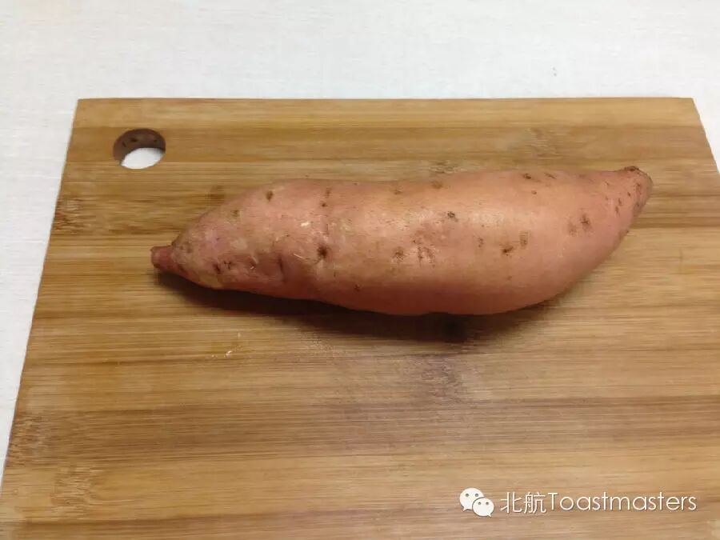
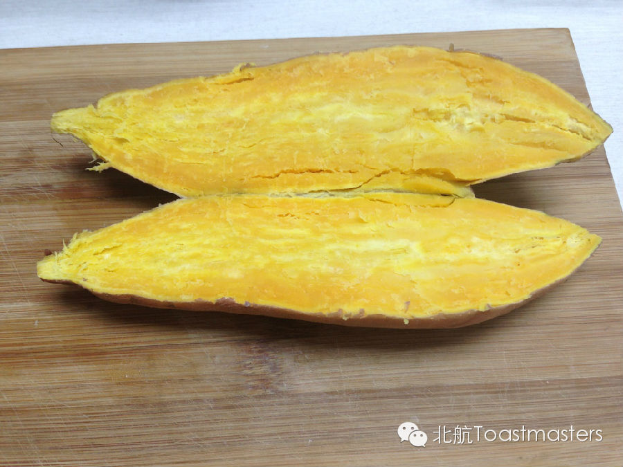
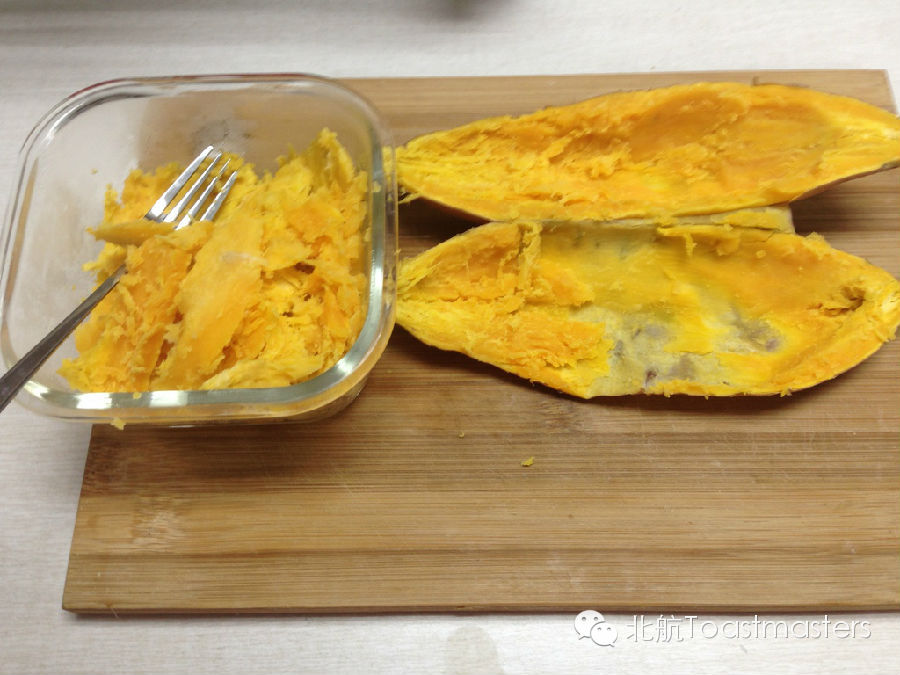
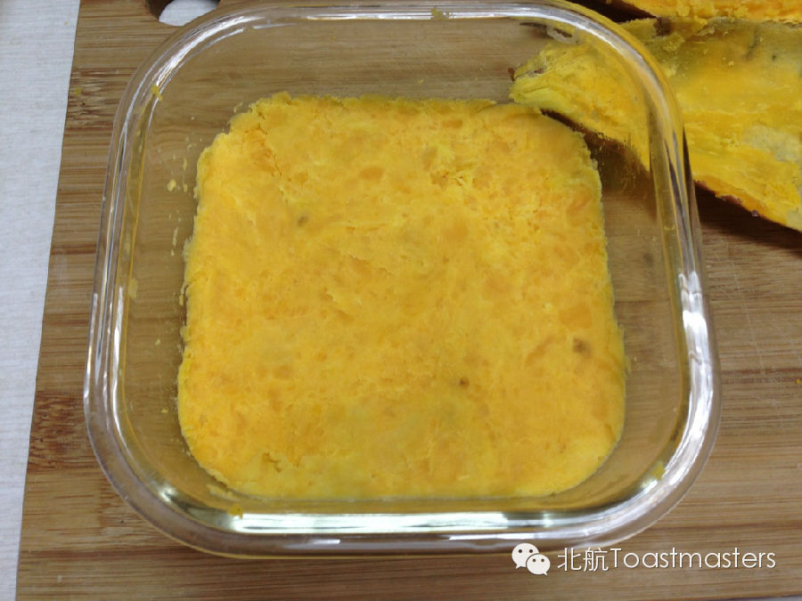
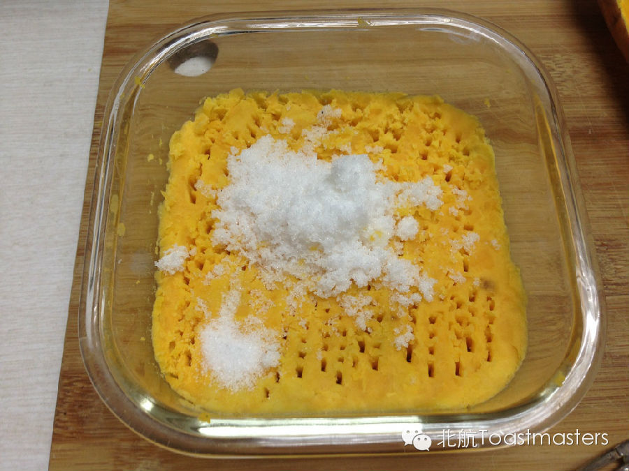
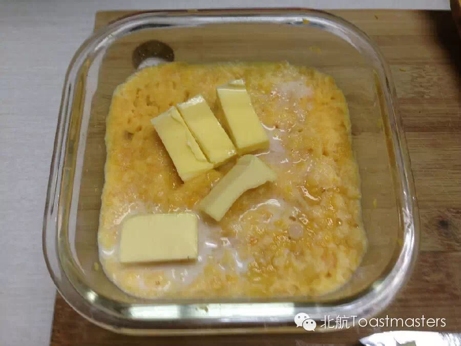
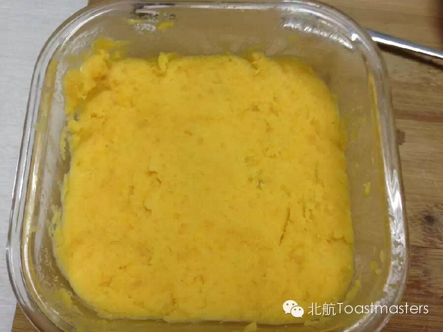
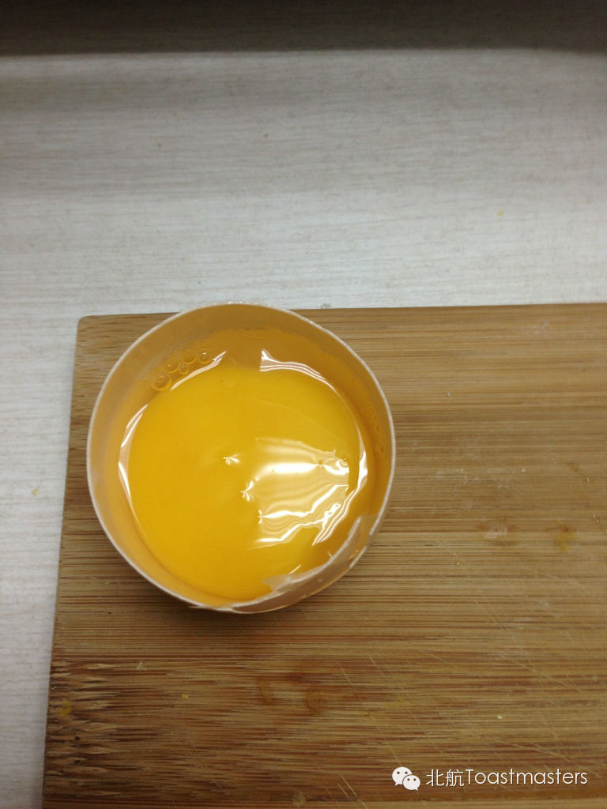
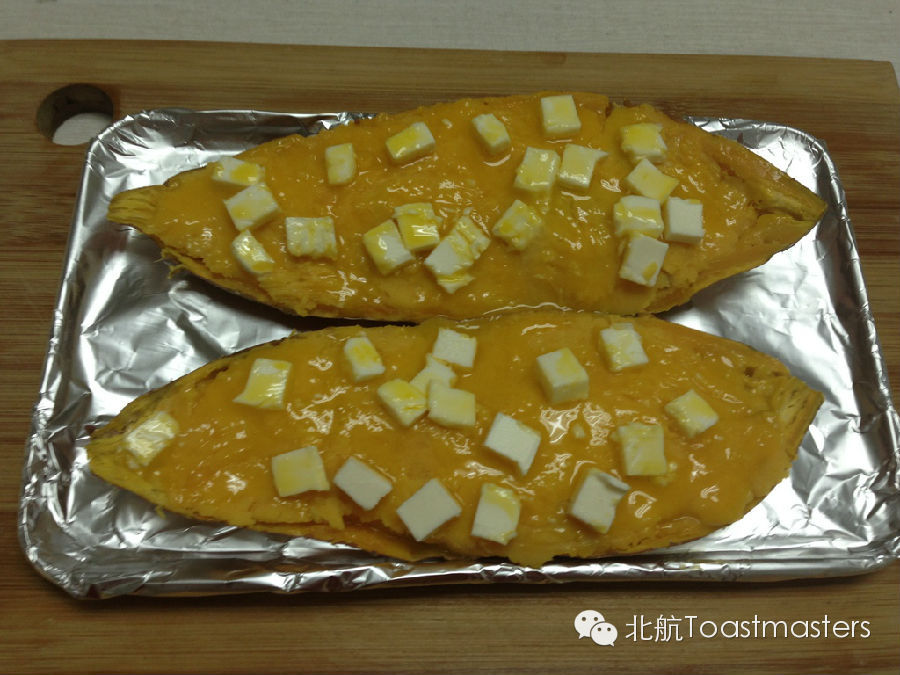
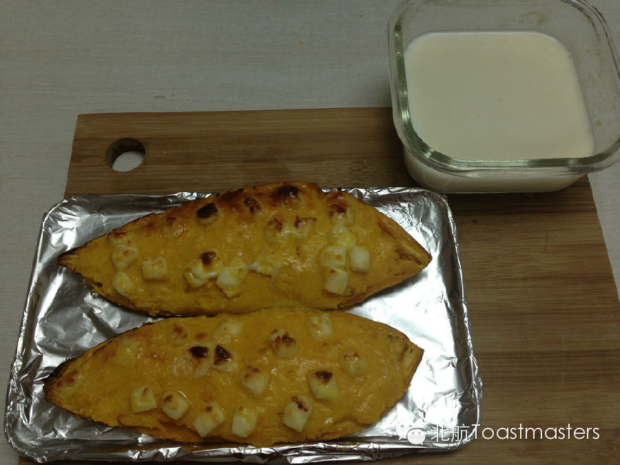

来来来咱微信平台也来点干货。。。
最近放假木有letter发，PR大人好惆怅啊，教大家折腾红薯吧~
吃过各种口味的红薯，对这种食物非常热爱。最近偶尔发掘新做法（平时没事干就会点开‘下厨房’APP，小哥已丧心病狂。。。），迫不及待尝试之！
首先你得有个红薯，今天优购卖得相当新鲜啊

我们的总体思路是挖出来填回去，so，扔微波炉高火5min，出来是这个样子——

然后开始挖吧，勺子配合小叉叉很效率有木有！

挖完压一压搅一搅弄成红薯泥

拿叉子搞些洞洞放牛奶跟白糖，小哥是咸口，就加了点盐，看见没左下角。。加点盐很好吃的说

还有牛奶黄油不要忘了，拿牛奶把调料拌一拌，放50ml的样子就差不多了，黄油别放多了容易腻

黄油放上去先微博1min，等软了就会拌的开咯，然后拌成装填材料——

把材料填回红薯吧（什么红薯皮给扔了。。微波吃红薯泥吧。。⊙﹏⊙b汗）
上烤箱前要抹一层蛋黄，分离个蛋黄出来，当当当当——

那操作可是相当NB
放上芝士粒，其实可以再小一点的。。奶酪片也可以哈
再把蛋黄抹上去，开考前是这样的

上烤箱15min，烤箱太mini了不给力，边边上都快糊了。唔。。。

蛋清也别扔，加上刚才剩下的牛奶微波2min当喝的吧。
西餐简直so easy，骚年你们也可以自己做哦
来尝一口，恩。。。好好吃的样子，我去吃了拜拜~